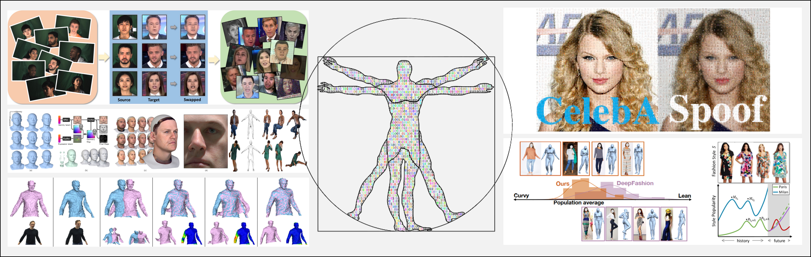

Challenges
ICCV 2021, The 3rd Workshop onSensing, Understanding and Synthesizing Humans |
||
Virtual (Online via Zoom)
|
||

Great progress has been achieved in human sensing, understanding and synthesis. We further identify three key issues of the future directions:
7:55 - 8:00 . Opening Remarks.
8:00 - 8:40 . Invited Talk by Prof. Matthias Nießner. [video] [slides]
8:40 - 8:50 . DeeperForensics Challenge Briefing. [video] [slides]
8:50 - 9:00 . CelebA-Spoof Challenge Briefing. [video] [slides]
9:00 - 9:30 . Invited Talk by Prof. Pietro Perona. [video] [slides]
9:30 - 10:00 . Invited Talk by Dr. Chuang Gan. [video] [slides]
10:00 - 10:05 . Closing Remarks.
21:55 - 22:00 . Opening Remarks.
22:00 - 22:40 . Invited Talk by Prof. Hao Li. [video]
22:40 - 23:20 . Invited Talk by Prof. Kristen Grauman. [video] [slides]
23:20 - 24:00 . Invited Talk by Dr. Richard Zhang. [video] [slides]
24:00 - 00:05 . Closing Remarks.